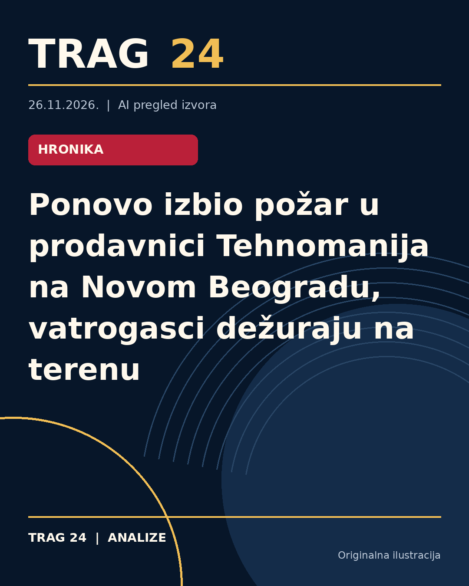

Ponovo izbio požar u prodavnici Tehnomanija na Novom Beogradu, vatrogasci dežuraju na terenu

ŠTA SE DOGODILO
U prodavnici Tehnomanija u Ulici Agostina Neta na Novom Beogradu tokom dana buknuo je požar, koji je brzo lokalizovan. Kasnije, u večernjim časovima oko 18 sati, došlo je do ponovnog izbijanja požara u istom objektu, koji su vatrogasci brzo ugasili. Zbog požara je upućen apel građanima da ne prolaze u blizini objekta jer se u vazduhu nalaze opasne čestice.
HRONOLOGIJA
Prvi požar dogodio se rano jutros oko 5 časova i 4 minuta, kada su vatrogasne ekipe stigle na mesto događaja za manje od pet minuta, ali je objekat bio u plamenu. Na gašenju je angažovano 30 vatrogasaca sa 11 vozila i cisterna za vodu. Kasnije, iste večeri, oko 18 sati, došlo je do ponovnog izbijanja požara koji je takođe brzo ugašen. Vatrogasne ekipe su nakon ovoga ostale na terenu i dežuraju radi prevencije novih izbijanja požara.
ŠTA NAVODE IZVORI
Prema izveštajima Telegrafa i Nedeljnika, kao mogući uzrok požara navode se električne instalacije. Oba izvora prenose apel nadležnih da građani izbegavaju prolazak u blizini prodavnice zbog opasnosti po zdravlje usled dima i opasnih čestica u vazduhu. Ministarstvo unutrašnjih poslova je saopštilo da u požaru nije bilo povređenih, ali je pričinjena velika materijalna šteta.
ŠTA JE POTVRĐENO
Potvrđeno je da su oba požara – jutarnji i večernji – brzo ugašena zahvaljujući brzoj intervenciji vatrogasaca. Takođe je potvrđeno da u požarima nije bilo povređenih osoba. Vatrogasne ekipe ostaju na terenu i dežuraju. Materijalna šteta je velika, a autobuskih linija u okolini požara bilo je preusmereno usled bezbednosnih mera.
ŠTA NIJE POTVRĐENO
Nije sa sigurnošću potvrđeno šta je precizan uzrok izbijanja požara, već je reč o sumnji da su u pitanju električne instalacije. Nisu dostupni detaljni podaci o obimu materijalne štete niti o daljim planovima za sanaciju objekta ili uzrocima koji su mogli dovesti do ponovnog požara.
ŠTA OSTАJE OTVORENO: Ostaje nejasno da li će biti sprovedena dodatna istraga o uzroku požara i koje mere će biti preduzete za bezbednost objekta u budućnosti. Takođe nije poznato koliko dugo će vatrogasne ekipe ostati u pripravnosti i da li će biti dodatnih upozorenja za građane u vezi sa stanjem vazduha oko objekta.
Izvori
- https://www.telegraf.rs/vesti/beograd/4440516-ponovo-izbio-pozar-u-tehnomaniji-hitno-upucen-apel-gradjanima
- https://www.nedeljnik.rs/rts-ponovo-ugasen-pozar-u-tehnomaniji-na-novom-beogradu-apel-gradjanima-da-ne-prolaze-tuda/
Ova analiza je pripremljena uz pomoć veštačke inteligencije na osnovu javno dostupnih izvora. Navodi izvora nisu nužno nezavisno potvrđeni.